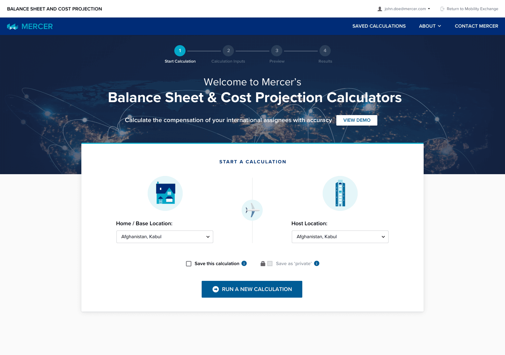
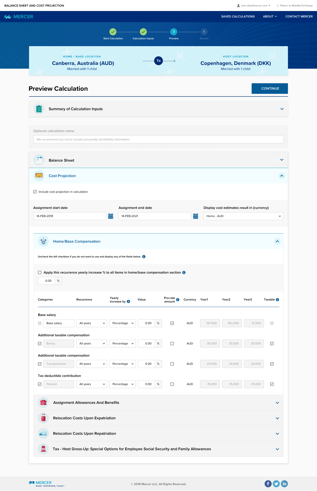
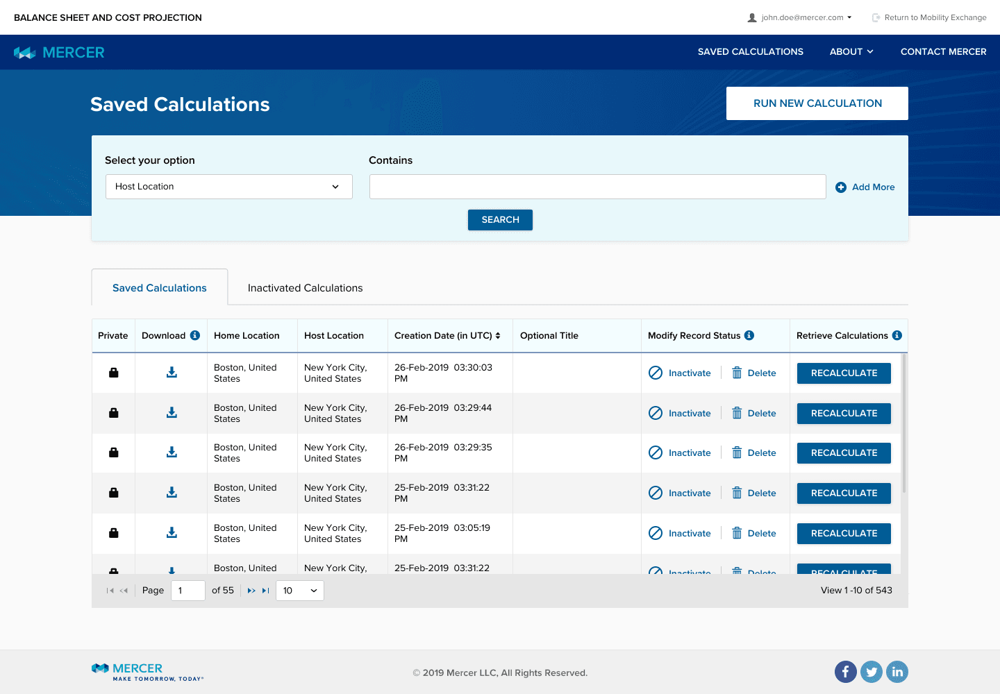
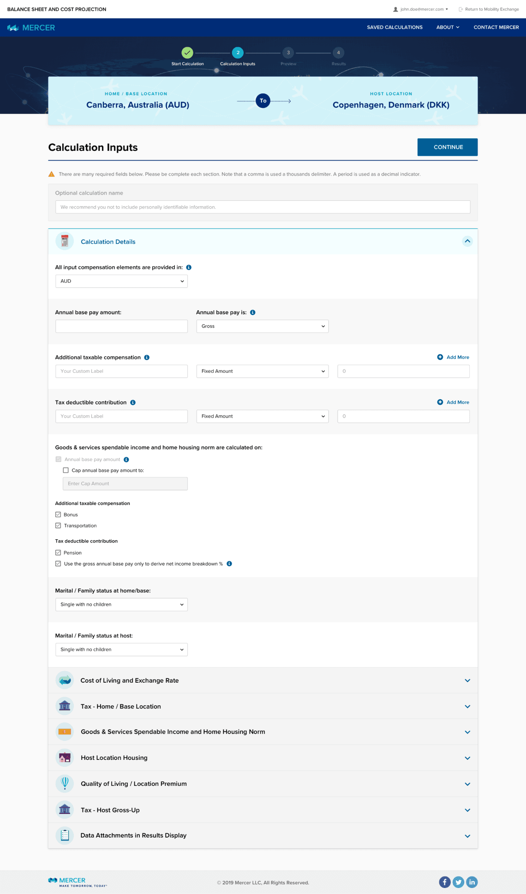
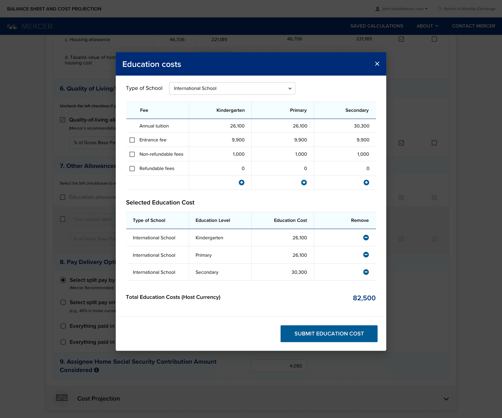

UI Developer/PM
1 Visual Designer, 1 UX Designer and 3 UI Developers
5 Months
Went live into production
This was a quick project that was to redesign the product for a conference. Started with an inventory of components and pages that needed to be redesigned. Then the designer worked from the supplied inventory. Developed a kitchen sink page of elements and components based on the designs. These were building blocks to build pages used by other developers.
To redesign the user interface and work flows for the end user to compete with other products on the market. The redesign effort was to bring a more modern design look and feel to the product.
Product redesign was well received and stirred up more interest to redesign other calculator product lines.




